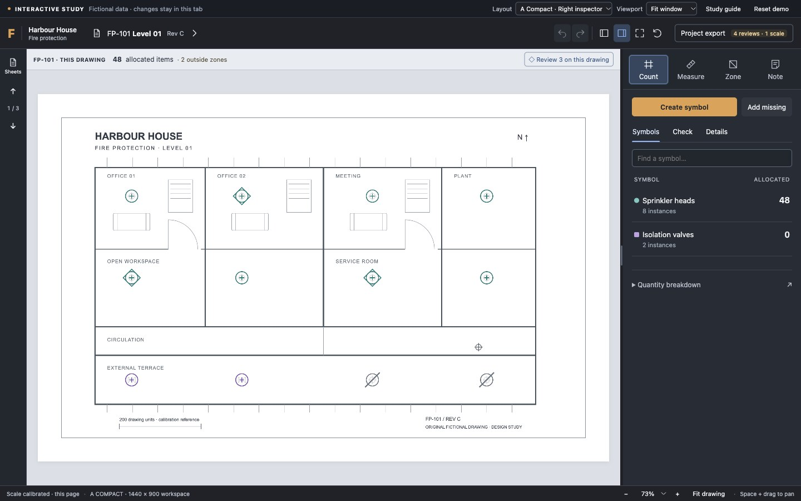
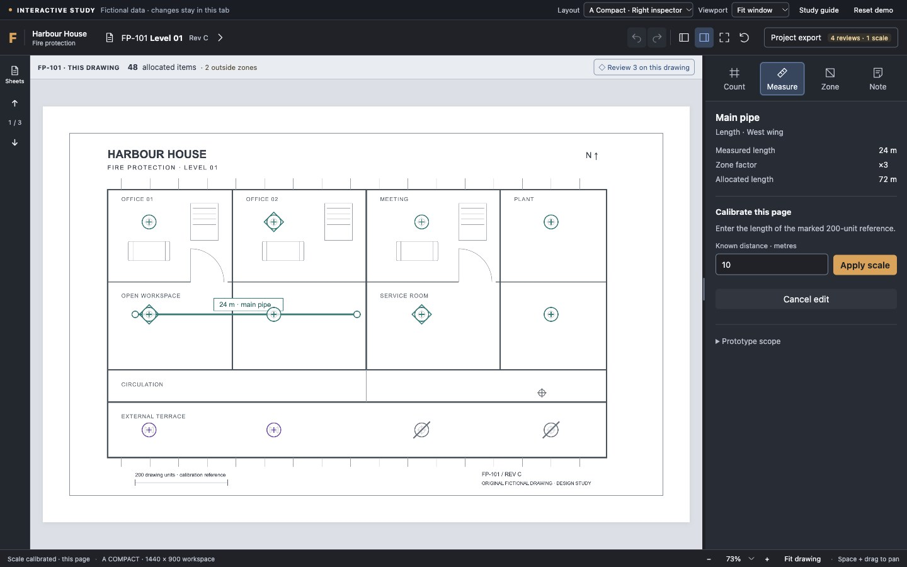
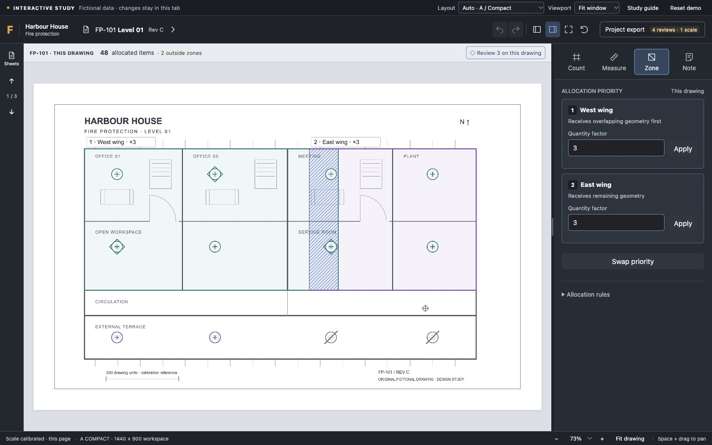

Tools and their controls, together.
Count, Measure, Zone and Note now sit at the top of one work panel. Select a tool and its options appear directly beneath it. The separate top-left tool strip, extra Select mode and repeated headings are gone.
Open the interactive prototype
Count

Create, find, check and correct symbols in the same area. Detailed quantity explanations expand when needed.Measure

Length and calibration controls replace the Count panel. Unrelated tabs disappear.Zone

Zones and priority controls share the work area. Allocation rules are available on demand.Actual1440×900 prototype captures. The default layouts retain the right-hand work panel, with compact drawing navigation on laptops. Global project/view controls remain in the header. The drawing gains34px of height.
Checked at1280×800,1440×900 and1920×1080. These are fictional SVG drawings and seeded demonstration results. Production software, calculations and saved projects remain untouched. This is a focused design revision, not a claim of Countfire feature parity or completed usability testing.